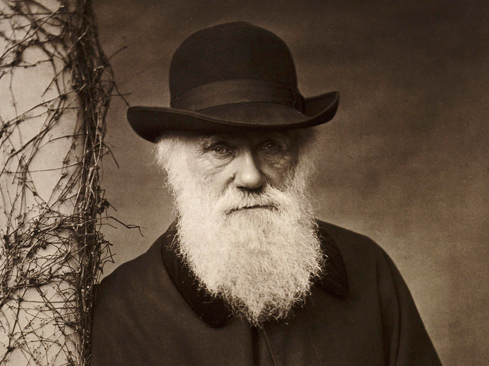
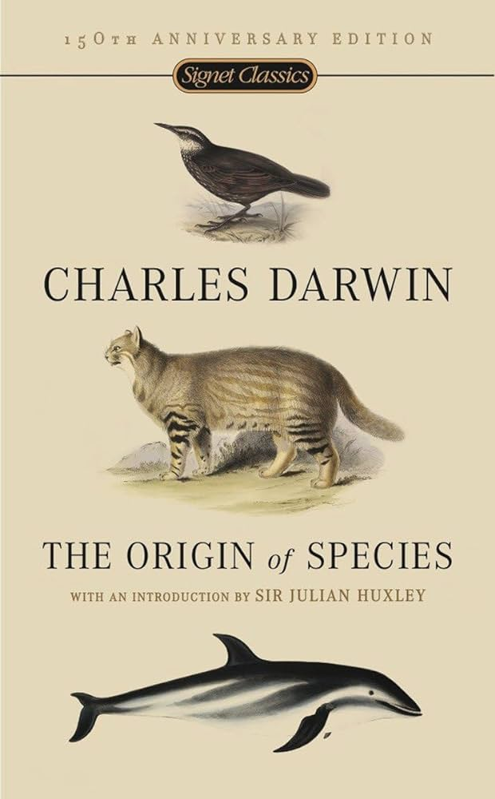

Who is he?
Charles Robert Darwin, born in 1809 was an English naturalist, geologist and biologist, best known for his contributions to evolutionary biology. His proposition that all species of life have descended from common ancestors is now widely accepted and considered a fundamental concept in science.
Charles Darwin
One of Charles Darwin's most popular theory is the 'Darwin theory'. The Theory of Evolution by natural selection, Darwin describes how organisms evolve over generations through the inheritance of physical or behavioral traits.

Darwinism
Back to topAbout Charles Darwin
Switched from Medical Education
Charles Darwin enrolled in the medical education program at the University of Edinburgh however, he was fascinated by nature and paid minimal attention to his medical studies. Since he was more interested in nature, He enrolled at Cambridge to study divinity.
On the Origin of Species
Charles Darwin Wrote a book called 'On the origin of species'. Alfred Wallace also developed a theory of natural selection and wanted Darwin's opinion regarding it and its publishing. At this time, Darwin realized the importance of publishing his theory, otherwise the credit may have gone to Alfred Wallace if he ended up publishing his theory first.
 Back to top